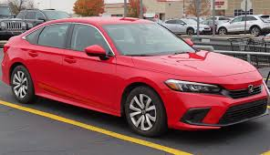

Su potencia se vive al máximo con un motor Turbo DOHC VTEC de 4 cilindros en línea, 1.5 litros y 176 hp* y un motor DOHC i-VTEC de 2.0 litros y 155 hp**, dándote el desempeño que necesitas al conducir un sedán que siendo tan emblemático y con 10 generaciones detrás, sabe lo que es llegar lejos.